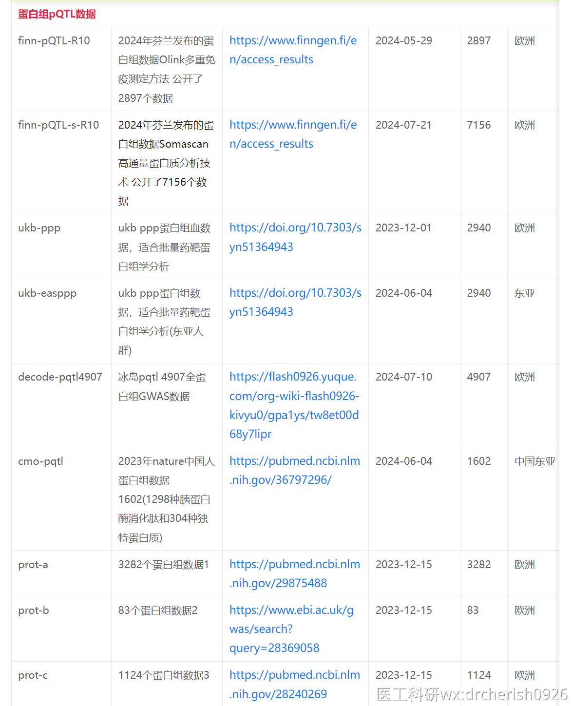

通用的处理顺式数据cis-MR分析的一键代码
可以对云上GWAS的在线数据、本地数据、IEU的在线数据，进行cis提取，并且进行MR分析
兼容各种需要进行cis限制的数据处理，一步到位，直接得到cis-qtl MR结果
文档第一点：
可以针对云上GWAS整个批次的数据做cis-qtl 的MR分析
文档第二点：
可以针对本地数据，ieu的在线数据，云上GWAS的数据，可选择性的选择部分或者全部数据进行cis-qtl的MR分析
PS：按照自己的需求选择分析的代码即可
一、针对云上GWAS的在线数据
library(MendelR)
mr_qtl_cis_batch("finn-pQTL-R10", "ieu-a-2",p1=5e-8, p2=0, r2=0.001, kb=10000, cis_win=1000,
steiger=F, rm_snps=NULL,no_clump=F,pop="EUR",
method_list=c("mr_ivw","mr_egger_regression","mr_weighted_median", "mr_weighted_mode","mr_wald_ratio"))云上GWAS的在线数据，支持各种阈值的cis提取，并且可以参考note字段数据，直接限制cis范围
填数据的开头编号即可，代码自动查找note备注信息，对数据进行cis数据限制。
finn-pQTL-R10 代表芬兰的蛋白组数据Olink测定法数据的id的前缀，逻辑上代码会直接匹配前缀获取批量id，然后提取数据。

目前云上可使用蛋白组cis数据，这些蛋白组数据，都已经补充好对应的gene详情信息，可以直接使用一键代码批量cis分析 

注意：使用云上的数据需要消耗积分，积分扣除规则移步02.云上GWAS积分是如何扣除的站内引用以下扣取积分的缓存规则只针对MendelR自动缓存功能Tips:如果是非MendelR用户直接使用FastGWASR的相关接口提取数据后可以自己写到本地硬盘，下次自己再次分析重新读取拿来二次使用就行。需要知道积分是如何扣除的，先了解数据是怎么获取的云上GWAS的数据都是通过FastGWASR包...
二、针对本地和ieu的在线数据，或者自定义部分id的数据
library(MendelR)
mr_qtl_cis_batch("testmsg.txt", "ieu-a-2",p1=5e-8, p2=0, r2=0.001, kb=10000, cis_win=1000,
steiger=F, rm_snps=NULL,no_clump=F,pop="EUR",
method_list=c("mr_ivw","mr_egger_regression","mr_weighted_median", "mr_weighted_mode","mr_wald_ratio"))示例格式文件：filefile
（这个文件只是描述文件，不是GWAS数据，作用是让代码知道你需要提取哪个数据，探针信息是什么）

每一行代表一个数据，包括三列数据
id可以填本地的文件（需要处理成模板SNP的格式02.本地数据模板SNP表头站内引用打开此文档，务必全部仔细看完，认真学习，掌握数据清洗的秘籍10.模板snp.csv表头不一定都会相同，但是弄明白其含义，就能掌握所有GWAS修改成模板SNP表头的秘籍！除了特别说明的格式，MendelR中使用的表头格式，都统一为模板snp的表头注意，表头的顺序没有要求，不影响数据分析，有就行只...），或者在线数据的id（IEU或云上GWAS）
trait 代表表型，可以填任意数据，建议填基因名
note 代表基因的详情 要求gene-gene探针-chr染色体-bpstart bp起始位点-bpend bp结束位点
其中gene和gene探针可以相同，比如示例A1BG_A1BG_19_58345178_58353492
这个示例文件，需要根据自己的数据补充完整。
如果是一个暴露一个结局，跑cis药靶分析，请移步简单的代码：药靶MR分析一键GET方法（单个数据单个基因MR分析）站内引用相比普通的两样本，限定SNP在基因的顺式cis范围内即通过基因顺序范围提取的工具变量SNP，代表暴露与结局的mr分析，得出因果关系即可以说明，在药物作用下的基因靶点表达，可以影响结局，从而达到临床上治疗结局表型的药物参考mr_common方法扩展可以增加gene参数或者 chr , pos_s...
注意：ieu-a-2 改成自己的数据
注意：本地文件需要有chr pos列
注意：gene数据，需要确认暴露的版本信息，因为gene有版本区别，不同的版本，bp限制范围不同，所以自己准备gene详情时，需要确保详情和暴露的版本信息是一致的。
比如这个HMGCR的bp信息：https://www.ncbi.nlm.nih.gov/gene/3156

参数说明：